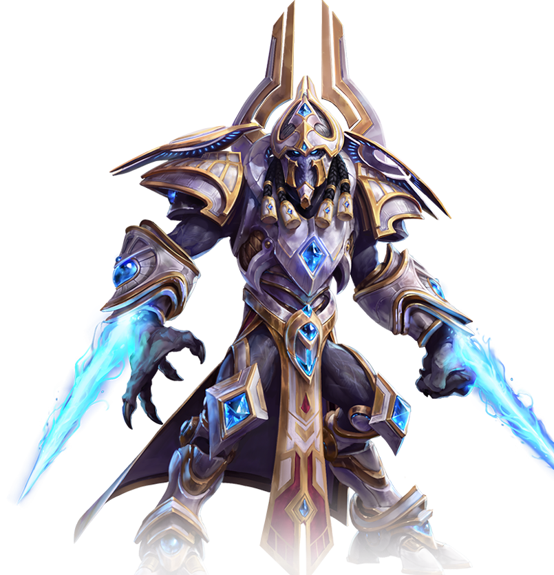
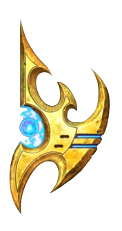
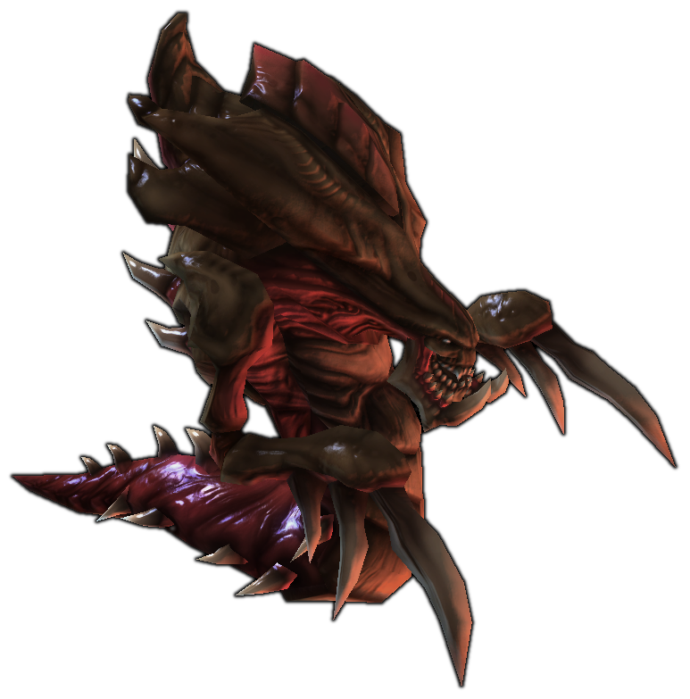
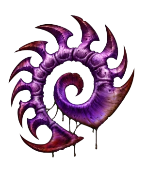
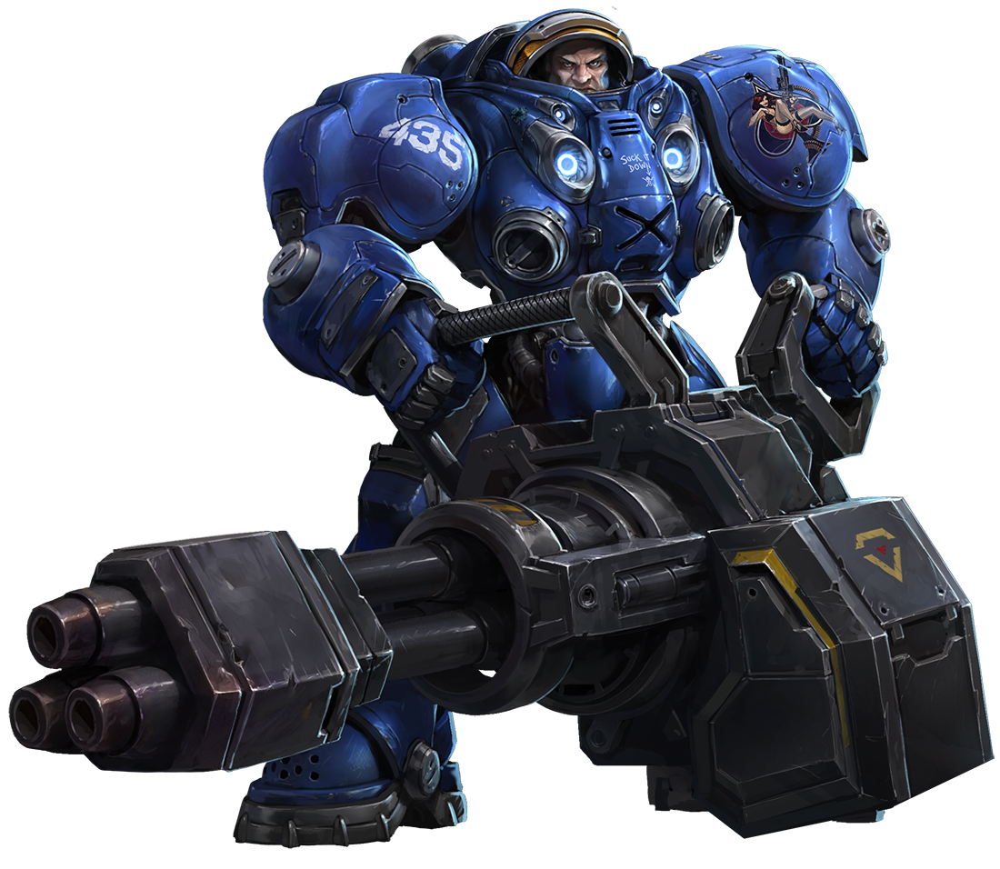
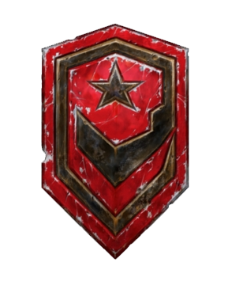

-
Zealot
AD 500
Descrição 
"Guerreiros inigualáveis no campo de batalha, os fanáticos passam por décadas de treinamento intenso para aperfeiçoar suas habilidades de combate. Suas lâminas psi exclusivas são formadas com sua própria energia psiônica."
-
Hydralisk
AD 450
Descrição 
O Hydralisk é a criatura básica da linha de frente dos Zergs, formando a base dos ataques com sua carapaça resistente e ataque à distância.
-
Marines
AD 400
Descrição 
"You want a piece of me, boy?" Os fuzileiros navais terráqueos são um tipo de infantaria à distância. "Trabalhe duro, jogue duro, morra jovem... mas não hoje!"